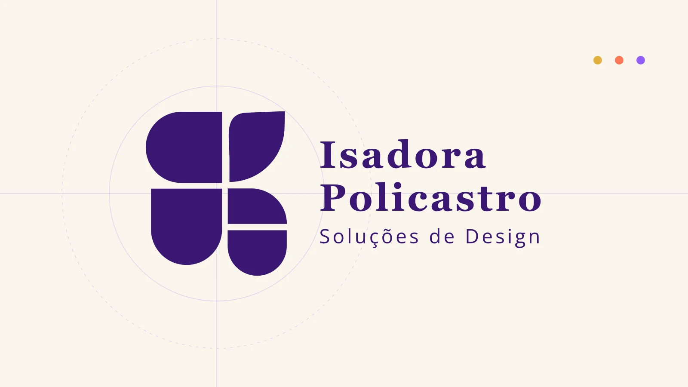
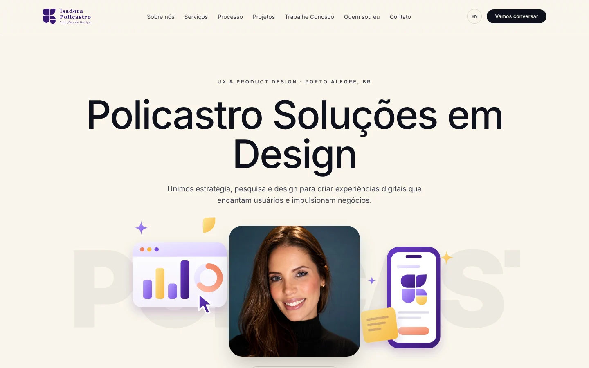
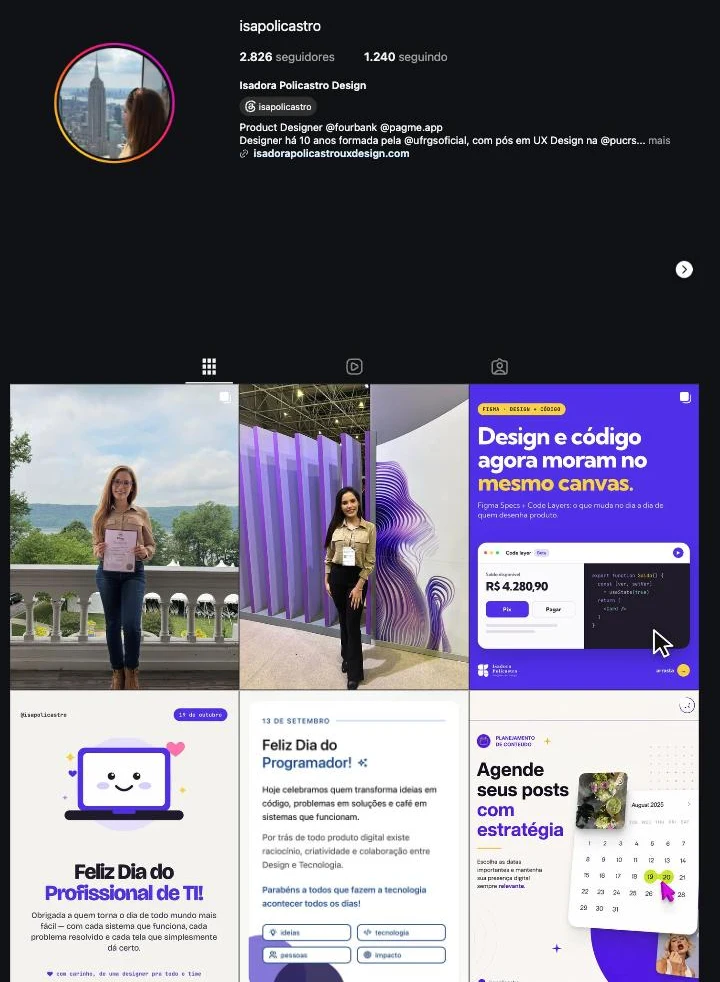
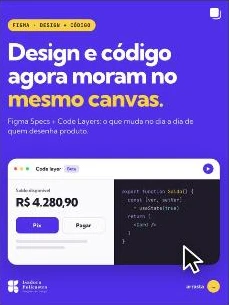

Policastro
A marca do meu estúdio de design: as iniciais I e P desenhadas como peças que florescem.

Conceito
As iniciais I e P, em forma de flor.
O símbolo é feito de cinco peças de cantos arredondados. Juntas, elas desenham as iniciais de Isadora Policastro: o I e o P.
As mesmas peças também se abrem como as pétalas de uma flor. A flor representa crescimento, que é o que o design faz pelos produtos e negócios de quem trabalha comigo.
I A coluna da esquerda
P As peças da direita
Flor As cinco peças como pétalas
Em uma frase
“Duas letras, cinco peças, uma flor.”
Animação
As peças crescem e se encaixam.
Na abertura do site, cada peça chega de uma direção diferente, cresce e se encaixa no lugar, como uma flor se formando.
Ao passar o mouse sobre o logo, as peças se afastam um pouco, como pétalas abrindo.
Cores
Roxo de base, amarelo para dar luz
Roxo Policastro
#3A1872
Violeta
#945FF9
Amarelo
#E0AF3B
Coral
#FC7756
Azul-noite
#0D153F
Creme
#F9F5EC
Aplicações
Do site ao Instagram



Entregas
Uma marca que se mexe
- Símbolo
- Assinatura
- Paleta de cores
- Animação do logo
- Site
- Posts
Quer uma marca assim para o seu negócio?
Vamos conversar sobre o seu projeto.